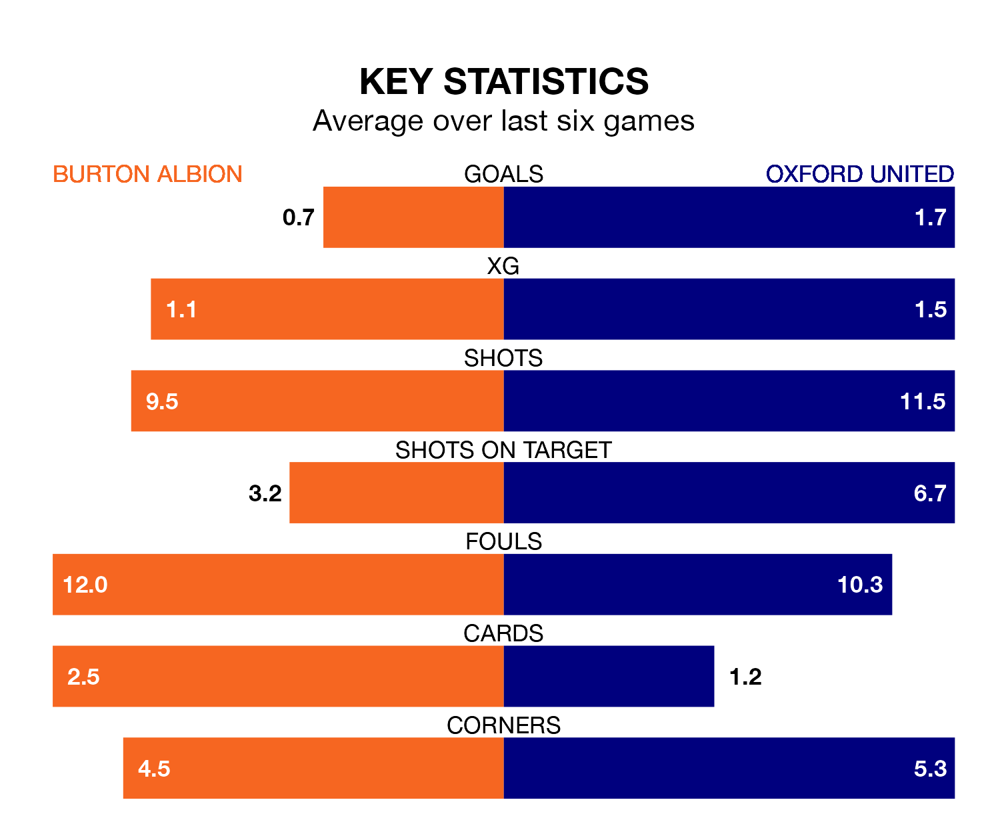

Oxford United are strong favourites to take all three points despite Burton Albion's home advantage in Saturday's match at the Pirelli Stadium.
*Betting Company* are offering odds of 2.0 on Oxford sealing the win, with the visitors sitting seventh in EFL League One table.
Burton, who are 20th in the league and 27 points behind the Us, are priced at 3.65 to win. A draw is set at 3.5.
Burton are in terrible form in EFL League One, with no wins and a draw from their last six games.
With three wins and a draw over that period, Oxford's form is much better – they have taken 10 points from 18, compared to Albion's one.
With 33 goals in 41 games so far this season, the Brewers are the league's joint-third-lowest scorers with 0.8 goals per game. And they are conceding at an average rate, letting in 55 goals at a rate of 1.3 per game.
United, meanwhile, are above average scorers, with 1.6 goals per game, compared to a league average of 1.3. They have conceded 1.3 goals per game.
In the last 10 years, Burton and Oxford have played each other on 12 occasions. Burton won two of them, Oxford seven, and they drew three times.
On average, the Brewers scored 1.2 goals and the Us 2.4 in those matches.
Their last meeting was on December 16, when Oxford won 3-0 at home.
Burton's last match was on Monday, a 3-1 loss against Barnsley, with Joe Powell getting the goal for the Brewers.
Oxford beat Fleetwood Town 4-0 last time out, also on Monday, with Mark Thomas Harris (two), Cameron Brannagan and Owen Dale on the scoresheet.
Saturday's match will be refereed by Will Finnie, who has taken charge of 16 EFL League One games so far this season, issuing one red card and booking 54 players. He has awarded three penalties.
The last Oxford game Finnie refereed was the 3-2 loss at home against Derby County on December 29. He is yet to oversee a match featuring Burton this season.
Updated: 16:41 (UTC), 04/04/24